This page contains my words on some of the topics of my interest and other issues that caught my attention. They are not arguments, nor are they reasoning. They simply reflect my beliefs, biases, and ideology that would go beyond reasoning. To categorize myself under "schools of thought", I can be associated with pragmatism, empiricism, skepticism, classicism, realism, and behaviorism (in psychology). It follows that I side against rationalism, cognitivism, modernism (in art and music), as well as most things that become trends. I do not feel comfortable categorizing myself with a bunch of "ism"s, but it was to give you a quick sense of my type. The following paragraphs can do a better job at describing my opinions in detail.
Serious music can sometimes be found in what is known as “classical”. Outside classical, there is no serious music. Even within classical, the majority are dull or painful to hear. For example, most (not all) of modern classical music (post 1880) sounds intolerable for a sensitive ear. It is a self-inflicted pain if you try to understand most moderns.
Romantic (nineteenth century) and classic (eighteenth century) periods are better, but most composers of that time still made bad music. Mozart is overrated; most of his music is for children. Beethoven stands in the middle as he can make good music; he sometimes does and often does not. Schubert is better.
Baroque period (seventeenth century) represents the quintessence of music. And above all composers of that period, Bach stands as the master. Bach knows his job; composing music for humans! He has pieces that can be listened for years if performed masterly.
Who can perform masterly? The one who knows how to play a piece as it is; serious, without deviations or dramatizations. An example of a master pianist is Sviatoslav Richter (1915–1997).
|
Johann Sebastian Bach (1685 - 1750) |
Sviatoslav Richter (1915 - 1997) |
It is interesting that the exact same timing period applies to my interest in painting. In general, classics are often the highest achievements of mankind hitherto.
To see an example of a serious music of my interest, see the performance of Bach's The Well Tempered Clavier from Sviatoslav Richter here. I would also invite you to see a documentray on the life of Sviatoslav Richter that is available in two parts: part 1 and part 2.
Here is a few of my favorite movies.
|
Grapes of Wrath (John Ford, 1940) |
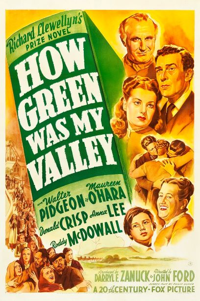
How Green Was My Valley (John Ford, 1941) |
The Shop Around the Corner (Ernst Lubitsch, 1940) |
|
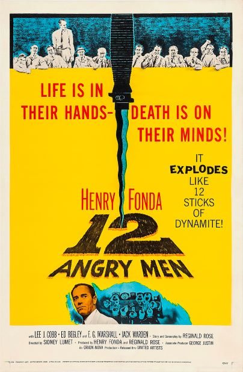
12 Angry Men (Sidney Lumet, 1957) |
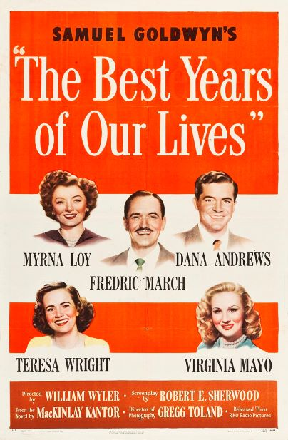
The Best Years of Our Lives (William Wyler, 1946) |
Dogville (Lars von Trier, 2003) |
I do not believe in the analysis of movies, but if we were to analyze, I would just say that my favorite movies were made according to the principles of filmmaking. Some of those principles can be formalized as they are the technique of filmmaking. But, the rest of the principles can only be gained by experience and training on the craft. The art of filmmaking is in bringing innovation within the domain of those principles.
Unfortunately, we see more and more cases in recent years that ignore the principles. Just take a cursory look at most of the films and TV series produced in recent years. They are not only suffering from ignoring the basic techniques of filmmaking, but their themes and subjects lack any seriousness. They just follow empty trends. It is as though lacking principles has become a value for them. I am not hopeless as I still see decent movies and documentaries that are made recently.
To understand philosophy, one’s life should be accompanied with doubt, hesitation. Reading and “learning” does not help much; it should come naturally. This is a prerequisite.
The greatest achievements in philosophy have been reached in the past; so, I am skeptical about philosophical “discussions”, “discoveries”, or “progress” that are being made in current times. There are only some brief notes that I can say, and I would leave them to another medium—maybe written articles. Suffice it to say that I have much homage to pay to the figures shown below.
|
David Hume (1711 - 1776) |
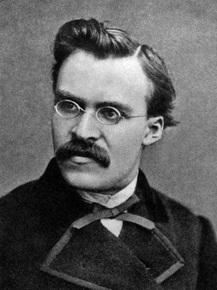
Friedrich Nietzsche (1844 - 1900) |
|
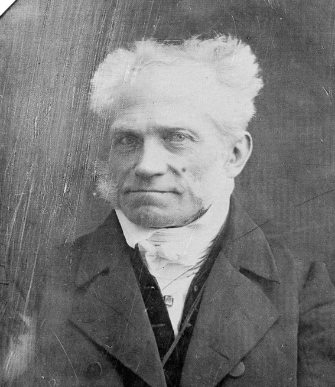
Arthur Schopenhauer (1788 - 1860) |
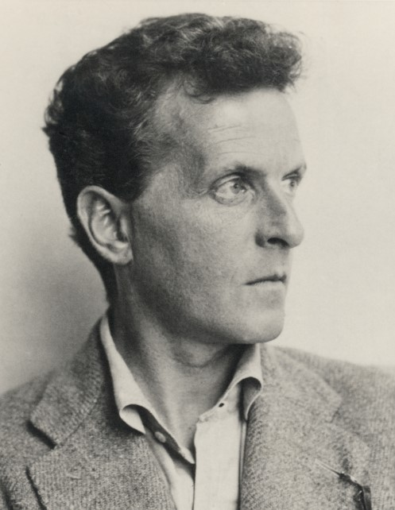
Ludwig Wittgenstein (1889 - 1951) |
As for a suggestion if you are interested, Bryan Magee produced two series of interview during 1970's and 1980's with some figures of contemporary philosophy. I would recommend watching. They are avaliable here.
I think it helps if I repeat what the commonsense expects from academia as an institution and people who run academia; it is education and training. Yes, this is something we should remind ourselves. Good academic institutions focus on teaching their student body and prepare the environment for this goal, and this is regardless of the distinction between “research” and “teaching” schools.
To achieve this goal faculty members and department managers should be focused and invested on teaching and education as their main priority. And they should be of the academic type of people; those who are interested in reading, learning, knowing, questioning, thinking, writing, speaking, teaching, and have qualifications in doing so (linguistic skills, etc.). Those people are excited about the topics of their interest, and enjoy spending time on those topics.
What I stated above is not idealistic; it is the minimum requirement for any academic institution. Yet, it is increasingly difficult to find such institutions and academics. Below, I just scratch the surface of some of the problems of many academic institutions today.
Many of today’s “academics” are not of academic type. They do not have the tendency to think, do not have a writing style and clarity of presentation, and are not careful in their observations and inferences. They are people most of whom possess some or all these characteristics:
• being committed to increase the number of their publications and similar statistics (like h-index in their Google Scholar) regardless of the quality of the works, • judging other people and works with the number of publications, citations, or grants, • having undue willingness to collaborate, indicating their lack of independence, • creating unnecessary confusion in teaching or discussing subjects in their classes and meetings, • lacking insight, even in their own field, • lacking opinions and the courage to express them, • lacking honesty with their audience and with readers, and more importantly, with themselves, • being indifferent to change anything in the world, • lacking focus and being distracted with trivial topics and issues, • having the tendency to call themselves and their colleagues with titles such as “doctor” and “professor”, • having the tendency to engage in long and useless conversations, talks, and meetings, • putting friends’ names on research papers as authors without sufficient contribution as a quid pro quo or as a favor, • and forcing students to put the advisors’ names on manuscripts without sufficient contribution from the advisors.
How do I know that these behaviors exist? I have had first-hand experience with them. And, I have seen and heard from friends and my acquaintances that even worse behaviors are practiced. The bigger problem, however, is that these behaviors are practiced in such a scale that have made them into norms, and consequently, does no longer count and look as unethical or unprofessional. During my time in academia, I have seen few serious academics who did not suffer from these problems. The listed characteristics applies not only to people in academia, but also to many “researchers” and “scientists” in other organizations. In academia, there are more of them, and so, easier to find.
This happens when many academic institutions and departments put “new” items in their agenda, such as external grants and their status in rankings. And many public funding institutions (like NSF) deteriorate the situation by funding projects most of which do not produce any useful results, creating a poisonous competition for grants.
I believe there also exists many academic institutions who still have their principles, respect themselves, and are not polluted by these problems. I think it is important to define, recognize, and distinguish the academic from un-academic characteristics with the hope to improve the academic atmosphere of the future.
Consumer Products
Manufacturing is a process. From design to selecting the raw materials and finishing, certain principles should guide the manufacturing process. Manufactured products have become cheaper in quality and design over time. Just look at the pictures below. These products followed the principles of standard manufacturing. However, look at products in the same categories nowadays. They are cheaper in quality and design than what you see in the photos. The bigger problem is that standard manufacturing is hardly practiced these days.
|
Revere Ware Cooking Pans (manufactured pre-1969) |
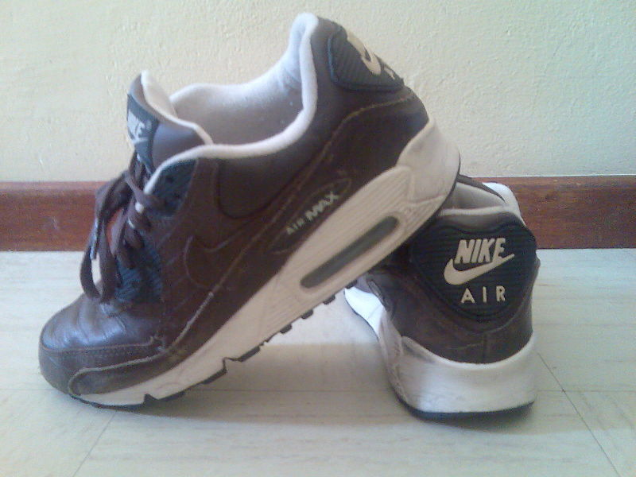
Nike Leather Air Max (manufactured pre-2000's) |
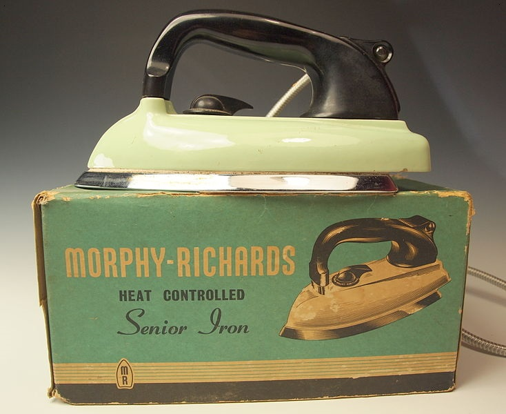
Morphy-Richards Iron (manufactured in 1950's) |
This is a crisis. Why? Standard-quality products are disappearing. For many types of products (e.g., clothing, kitchen appliances), either you should buy cheap products that are easily available in the market, or you should go to the warehouse of your parents and grandparents to see if you can find good-old products. Over time, online and offline retailers like Walmart and Amazon have become the selling agents of cheap manufacturers. Almost all good-old manufacturers faced bankruptcy years ago. This is partly the result of the unfettered and ignorant laissez-faire.
Vehicles
Automobile industry is a good example of how western manufacturing and design has lost quality over time. Especially, the external design of automobiles has been particularly degraded. The emergence of the universal cheap automobile design and manufacturing happened during the 90’s—the same time that automobile industry in the US started its decline (both in profit and in design and quality). Look at some examples from 80’s in the photos below. The design was functional, serious, and decent. All parts of the external design are in their proper place and in proper size.
|
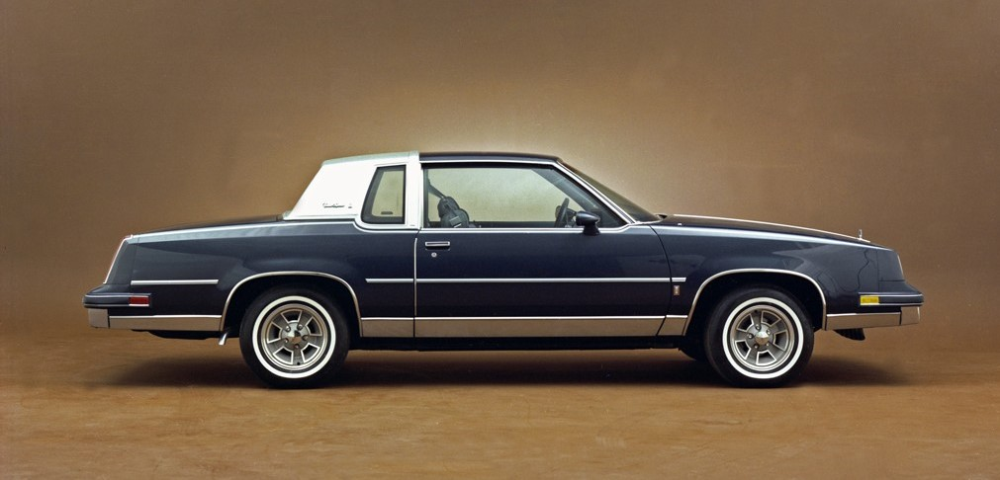
Oldsmobile Cutlass Supreme (1982) |
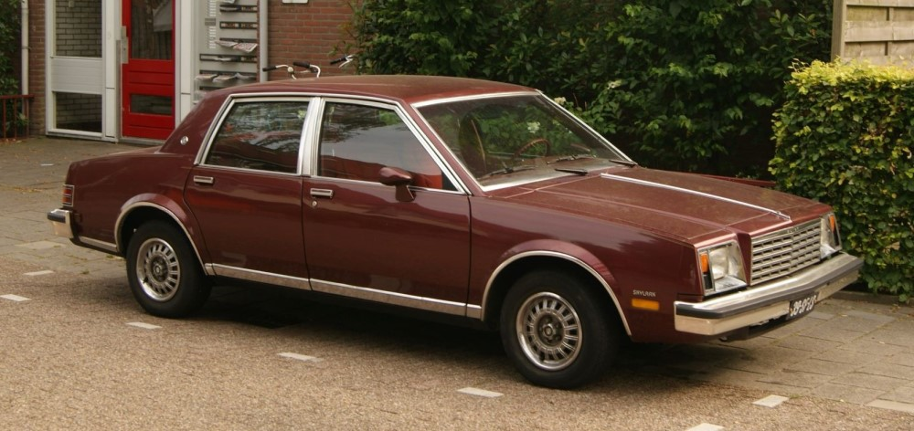
Buick Skylark (1980) |
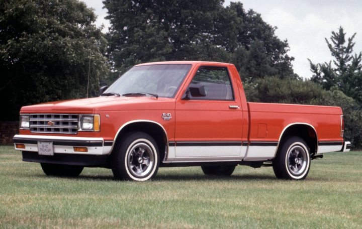
Chevrolet S-10 (1982) |
But look around and see the design of newer automobiles (especially post 2000's). Beside the problem of shape and external design, the quality of the materials that are used inside the cabin is lower than before. If you have a new car, just pay attention to the cheap plastic and other composite materials in dashboard, steering wheel, doors, and handles. You should only be very rich to buy a car with standard-quality cabin materials. This was not the case for older cars (pre-90’s). In short, many things in auto industry were better prior to 90’s.
I found that one of the main reasons behind this de-evolution is government regulation. The government indirectly ordered manufacturers to make their automobiles “safer” both for passengers and for pedestrians. And, the government decided to regulate fuel consumption. In doing so, automobiles had to follow some uniform guidelines to increase “safety” and fuel efficiency. That is why, for example, passengers’ window areas became smaller, back sections of chassis were raised, and the internal materials became lighter and cheaper.
In fact, the government decided a big part of what automobiles look like. I doubt if those regulators investigated, for example, the increased danger that lowering the driver’s visibility can cause, as well as the overall durability of these cars. In this situation, what many manufacturers did, instead, was to add unnecessary and bothersome “features” to automobiles such as big touch-screens in dashboards, driver assistance and guidance, and cameras that shows automobile’s surroundings. When manufacturers are not (or cannot be) innovative in external design, it is no surprise that they would try to add many unnecessary features.
For a more detailed discussion on the topic, I found this webpage to be good: https://www.aier.org/article/design-regulations-helped-ruin-american-cars/
Things are better for motorcycles, and this is because safety and fuel regulations were a bit difficult to implement for motorcycles, and because people use automobiles much more than motorcycles, at least in the US. However, the cheapening of quality is impending for the world of motorcycle as well. For example, outsourcing by traditional motorcycle manufacturers like Harley-Davidson, and manufacturing in other countries with cheaper labor (e.g., India and Thailand) reduced the quality of some motorcycles (e.g., Harley-Davidson Street 500). If the current trend in industry and economy continues, the same crisis that took over the auto industry will also wipe out good old-fashioned motorcycles.
In short, if there is any remaining manufacturer of standard-quality products in the West, the price tag of those products is astronomical. This is in part because those products are rare. The same products were much cheaper in good-old days. It is interesting to see that the economic and business system that was supposed to favor consumers by reducing the prices have actually resulted in a sharp increase in prices of the same quality—indeed, only if you can still find those products in the market.
This is a crisis. The crisis of not having decent manufactured products, and not producing them. The power of manufacturing industrial products is crucial for any healthy society, and this power is being taken away from the West (and maybe by the West). This might even be dangerous. The reasons for this situation are naïve economic and business policies, bad management, and a pure interest in making profit by companies.
There are rules and principles in any art and craft. The rules and principles come from years of practice, as well as a healthy business and economic environment. You can still find good works and products among human creations. But the rules and principles remain the same. Those principles guide human appreciation of beauty, harmony, and quality. I repeat that innovation and the art of creating "new" works is in following the principles, not in ignoring them.
What we, humans, need sometimes is some quiet time, some break, "hygiene", "disinfection". The concept of decency would embody my interests; decent music, painting, films, design, and products. I am skeptical about things that become “trends”. Many trends and “modern” products are the result of ignoring principles; the principles that would require the creators to practice for years to learn how to create, produce, and manufacture. Indeed, practice needs patience; what classics had and many “moderners” lack.
Most of who I am is indeed influenced from my childhood; from my father. And I will never forget the beautiful memories that I have from my hometown.
|
My Father |
Rasht, Iran (my hometown) |